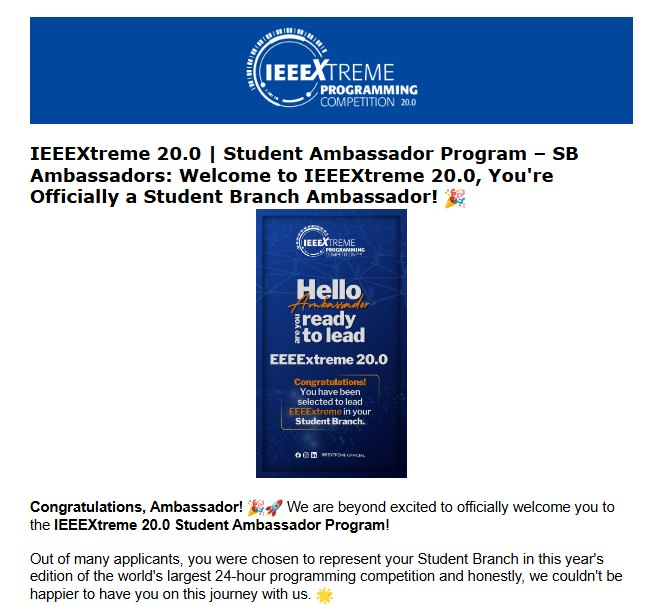
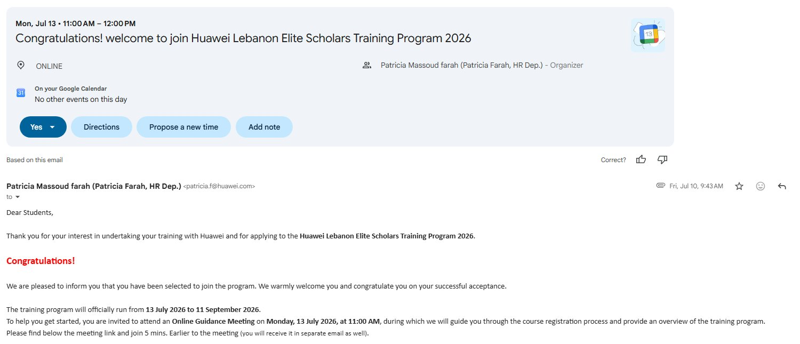

Engineering profile
Engineering profile
Current focus
Telecommunications, embedded systems, and smart connected solutions.
I enjoy taking an idea from hardware wiring and signal flow into a complete tested system that can monitor, alert, and communicate.
Communications · Electronics · Embedded Systems
I’m Ali Naser, a Communications and Electronics Engineering student at Beirut Arab University. My work focuses on embedded systems, smart connected technologies, IoT integration, sensing, and practical prototype development.
Engineering profile
Current focus
I enjoy taking an idea from hardware wiring and signal flow into a complete tested system that can monitor, alert, and communicate.
Chosen to represent and support IEEEXtreme activities at my student branch.
Selected through a competitive process to join Huawei’s technical training program.
01 / ABOUT
I am most interested in the point where hardware stops being just a circuit and starts becoming a working system. My projects bring together microcontrollers, sensors, wireless communication, dashboards, alerts, displays, and user interaction into complete prototypes that can be demonstrated and evaluated in real use cases.
I am especially interested in telecommunications, network technologies, embedded systems, and IoT, and I am looking for opportunities where I can keep building strong technical judgment through real engineering work.
02 / SELECTED WORK
Projects that reflect the way I approach engineering: understand the requirement, build the signal path, integrate the control logic, connect the interface, then test the full behavior.
Embedded + IoT + Monitoring
A smart-home prototype that combines embedded control, sensing, keypad access, gate servo logic, Wi‑Fi monitoring, Telegram alerting, LCD feedback, and remote status control into one integrated system.
Assistive technology
A non-intrusive monitoring project using ESP32 devices, sensing, and caregiver-side feedback to detect triggers and distress indicators in real time.
Robotics
Built in AUST’s Formula One robotics environment with a focus on wiring, motor control, debugging, and iterative team-based testing.
Electronics
A microcontroller-free car lighting circuit implementing turn-signal behavior and high/low light switching through practical circuit design and wiring.
03 / RECOGNITION
Two experiences that reflect both leadership and technical growth: IEEE representation and competitive technical training.
Officially selected to represent my student branch in IEEEXtreme 20.0 and support student engagement around the world’s largest 24-hour programming competition.

Selected through a competitive process to join Huawei’s Elite Scholars training program, strengthening my exposure to telecommunications and ICT-related learning.

04 / CASS PROJECT PROOF
A full proof section for the Safety Monitoring System for Children with Autism, combining prototype evidence, presentation images, judging moments, and competition recognition.
This project was developed as a non-intrusive safety monitoring system that detects environmental triggers and child-specific distress indicators, then alerts a caregiver wirelessly using ESP‑NOW.
05 / SMART HOME PROOF
Hardware, monitoring screens, remote alerting, and mechanism testing pulled directly from the project package.
The project combines embedded controllers, access control, alerts, and smart monitoring into a practical prototype that can be observed both locally and remotely.
06 / CAPABILITIES
My work sits at the intersection of software, hardware, and communication between devices.
Embedded-oriented programming, microcontroller logic, and practical implementation for device control and system behavior.
Hands-on integration of controllers with sensors, displays, relays, motors, servos, buzzers, and communication modules.
Device-to-device communication, remote monitoring interfaces, alert systems, and connected control workflows.
Simulation, programming, documentation, and presentation tools used across coursework and project development.
07 / TRAINING
08 / LEADERSHIP
Also active in university futsal and football.
09 / EDUCATION
Beirut Arab University
Amjad High School
10 / COVER LETTER
A refined cover letter is already integrated into the portfolio. Adjust the company and role below and the text updates instantly.
Dear Hiring Manager,
I am writing to express my interest in a Telecommunications Engineering Internship at Nokia. I am currently pursuing a B.E. in Communications and Electronics Engineering at Beirut Arab University, where I have developed a strong interest in telecommunications, networking, embedded systems, and smart connected technologies.
Throughout my studies, I have gained practical experience through several engineering projects. I am currently working on a Smart Home Automation and Security System using embedded controllers, sensors, UART communication, Wi‑Fi monitoring, and IoT features. I have also worked on an IEEE CASS student design project involving ESP32 devices, wireless communication, sensors, and real-time safety monitoring. These projects have strengthened my skills in programming, electronics, troubleshooting, teamwork, and system integration.
I was also selected to participate in the Huawei Lebanon Elite Scholars Training Program through a competitive selection process, giving me an additional opportunity to develop my knowledge of the telecommunications and ICT industry. In addition, my IEEE involvement — including serving as an IEEEXtreme 20.0 Student Branch Ambassador and IEEE Student Branch Treasurer — has helped me develop leadership, communication, and organizational skills alongside my technical background.
I am particularly interested in Nokia because of its work in telecommunications and network technologies. A Telecommunications Engineering Internship would give me the opportunity to apply what I have learned in a professional environment, gain hands-on industry experience, and further develop my knowledge of modern communication networks.
I would appreciate the opportunity to contribute my technical skills, motivation, and willingness to learn as part of your team. Thank you for considering my application. I look forward to the possibility of discussing my qualifications further.
Sincerely,
Ali Naser
Ali Naser
Available for internships, engineering projects, and technical collaboration.
I’m interested in opportunities where I can apply my background in telecommunications, embedded systems, and connected technologies while continuing to grow through real engineering work.